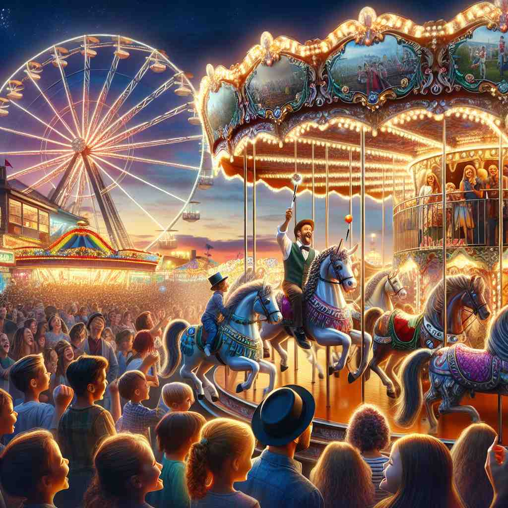
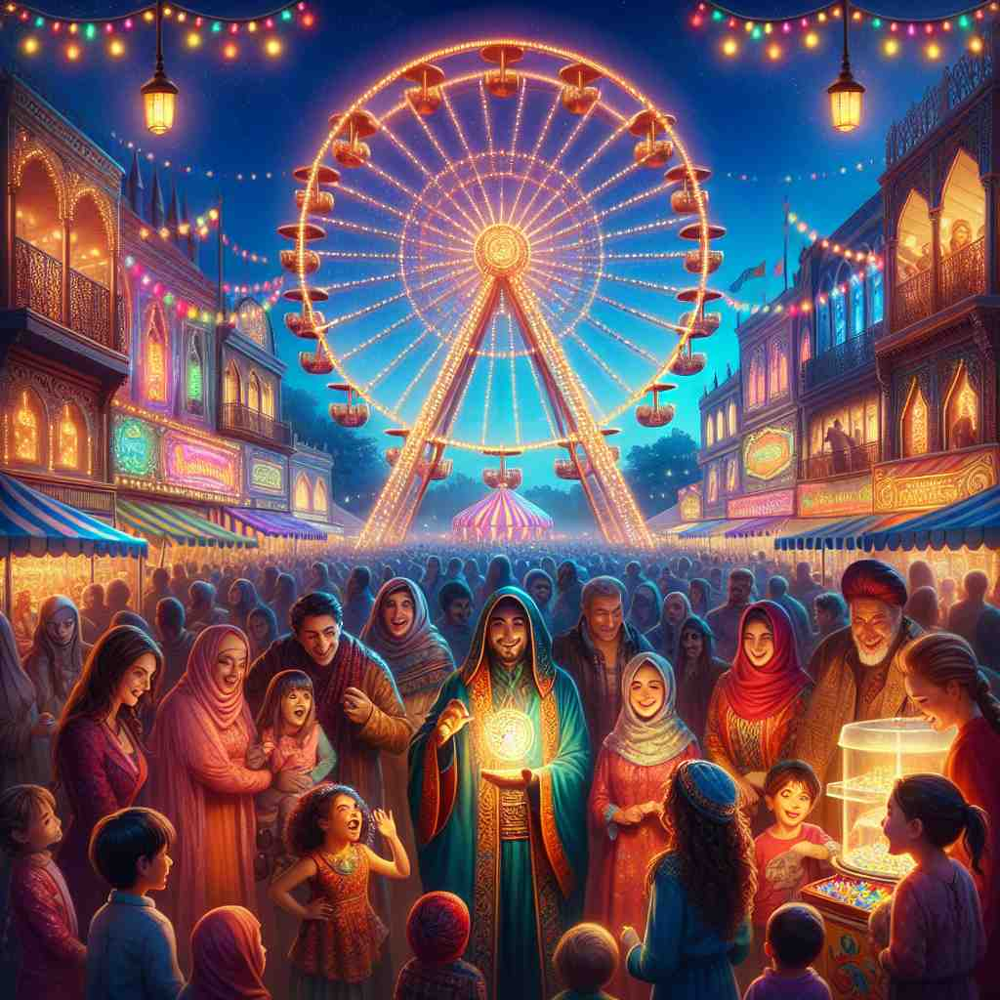
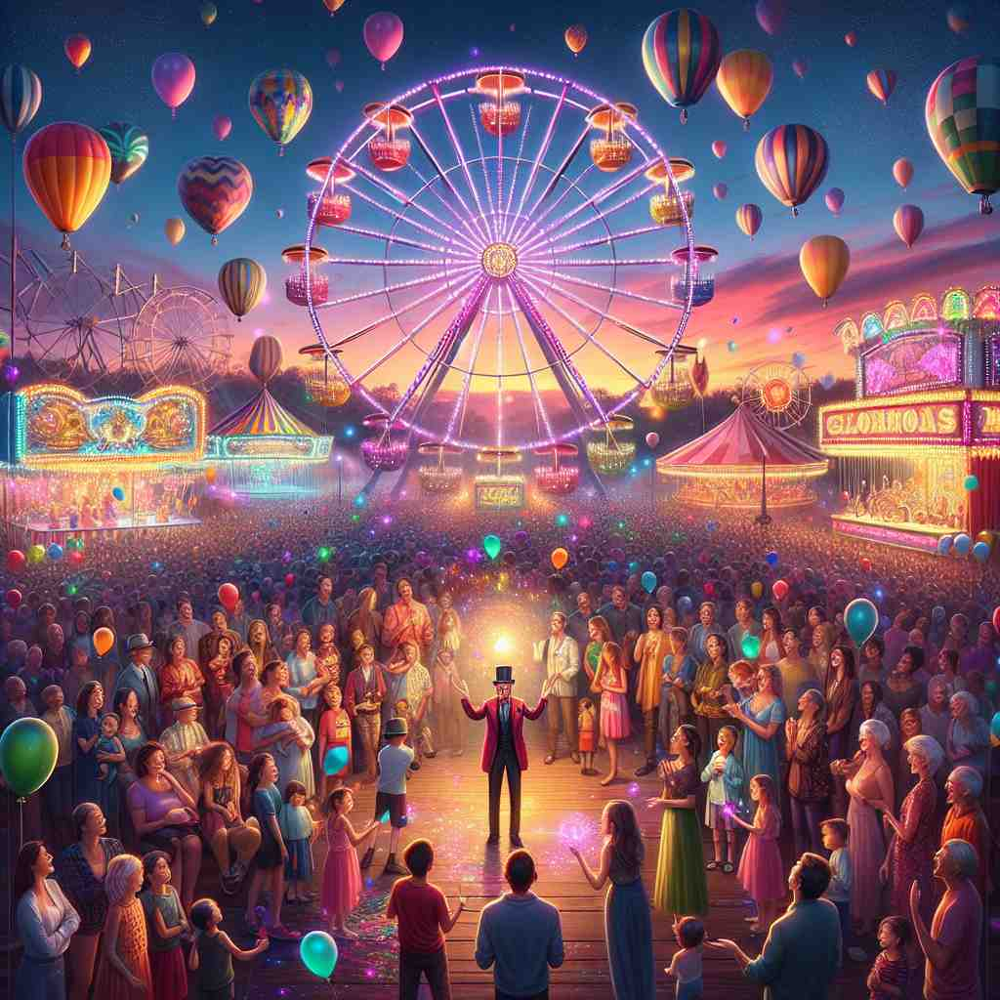

💬 The amusement park attraction draws many visitors every night. 游乐园的景点每晚吸引大量游客。

💬 The Ferris wheel is the main attraction at the fair. 摩天轮是博览会的主要景点。

💬 The fair is a popular attraction for families and children. 这个展会是家庭和儿童的热门去处。

💬 The magnets show strong magnetic attraction to each other. 磁铁之间表现出强烈的磁吸引力。
🧠 想象'attraction'是一种无形的力量，能够将人或物吸引到某处或某物。这种力量可以体现在人与人之间的吸引，也可以是某个地方或事物对人的吸引，甚至延伸到物理学中物体之间的吸引力。通过这个核心概念，你可以轻松理解和记忆'attraction'的各种用法。
🔈 [ə'trækʃ(ə)n]
🗝️ n. the action or power of evoking interest, pleasure, or liking for someone or something 引起对某人或某物的兴趣、愉悦或好感的行为或能力。
🎭 在一个繁忙的咖啡馆里，角落坐着一位音乐家。他轻轻弹奏着吉他，旋律优美动人，吸引了周围人的注意力，不少人停下来倾听。这展示了'attraction'作为引起兴趣或喜欢的力量。
💬 The attraction between them was immediate and intense. 他们之间的吸引力是立刻而强烈的。
🌳 由词根 "tract"（拉、吸引）加上前缀 "at-"（表示方向或加强语气）和名词后缀 "-ion" 组成，表示 "吸引" 的行为或状态。
🕸️ 1. attract: 吸引 2. tractor: 拖拉机 3. subtract: 减去
💡 记忆 "attraction" 可以联想为 "at"（朝）+ "tract"（拉），即朝某个方向拉的力量，联想到景点等吸引人的特质。